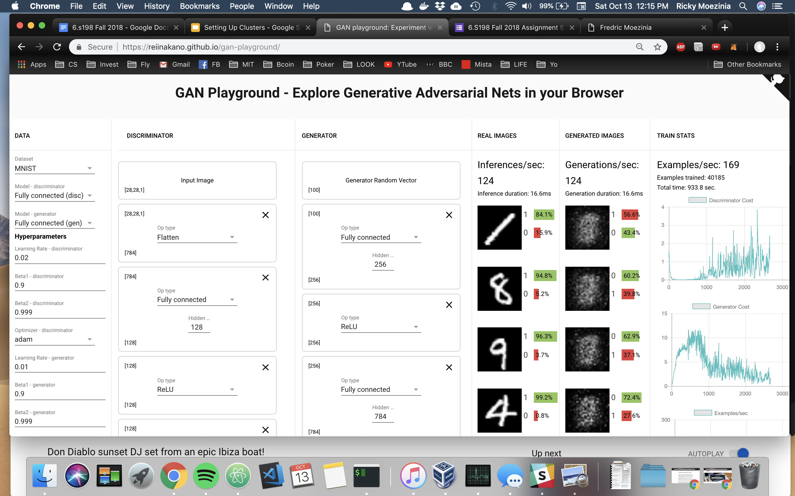
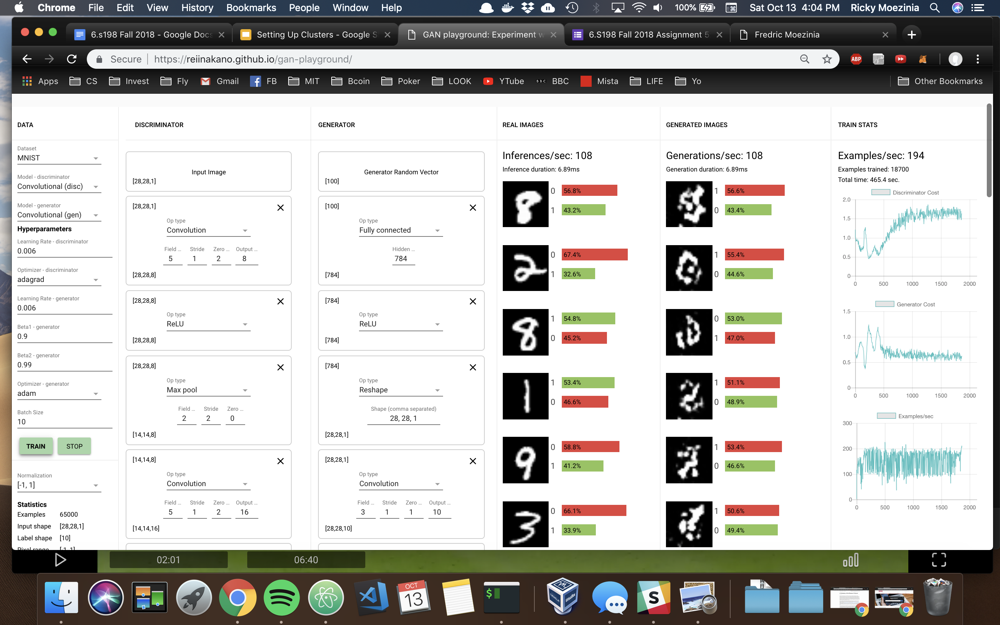
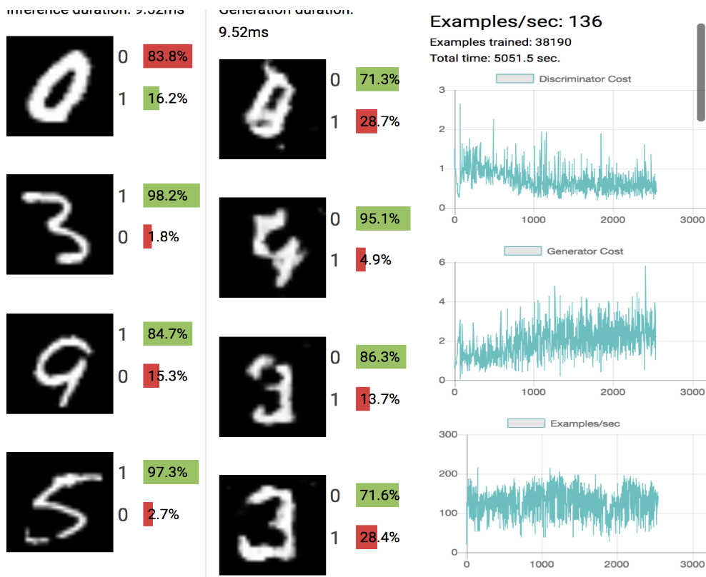
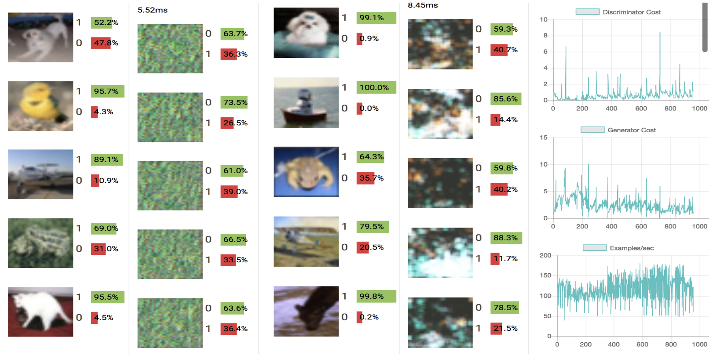

The Generator needs the second FC layer to transform the shape [256] output of the first FC layer so that the Reshape layer can convert the [784] nodes into a [28, 28, 1] which represents the output image that the Generator is generating. We need the FC layer to output a correctly sized image.
I had to use the convolutional model, with adam as the optimizer in order to generate images which looked at least a little bit real. After 77K examples trained, I got the below results. Despite the fact that the loss began to plato, this training run lasted around 40 minutes, most likely a result of using the adam optimizer instead of gradient descent. This also could have been caused by a bottleneck in network performance, if there are any dependencies on download speed.
I attempted to run the FC model with adam optimization, since SGD did not improve generation. I also tried doubling the learning rate from 0.01 to 0.02. The results are below; again, the generator's loss does decrease substantially however the images generated are not at all realistic, suggesting that the model itself may be the issue (especially as the discriminator's cost is varying dramatically.)
When training with the convolutional model, the generated digit images actually seem to come about quicker than with the FC model. There are very early signs and resemblances with digits, as the white parts become less blotchy and much more distinct. This is even after around 4 minutes of trainig; however, to become clear digits it takes a lot longer. I had difficulties trainig the Fully Connected model; the images generated never became realistic when using gradient descent.
Here I tried running with different optimizers for the D and G parts of the GAN, while using a convolutional model. The discrimator's learning rate was lower than that of the generator, and thought the discriminator's cost went up pretty consistently after 10/15K images trained, I actually garnered some cool results (compared to mostly blobby and fuzzy digits generated by other model setups). We can see these results below, which show more defined images which have holes in them, otherwise look like digits.
I also tried another convolutional model and changed both optimizers to adam. I again set the LR of discrimator to lower than the generator, and this seemed to work well after 35K images as shown below.
I tried several more configurations, however I wanted to try enlarging the difference between the learning rates of the discriminator and generator. Now I tried having a larger discrimator learning rate. It seems in general this does not! work as well since the job of the discrimator is a lot easier than the generator. This means that the two models are updating unequally and the model becomes imbalanced. I used adam and conv layers again. After a few minutes of traning (4-5) the digit-like images dissapeared, perhaps because of mode collapse.
I ran CIFAR as a fully connected model, however I did not get nice results (left). However, I then implemeneted the model with a convolutional setup and garnered better results as shown on the right. In this small amount of time, I was able to get better looking results, however perhaps I needed to train the model for more epochs and with different rates and betas and optimzers in order to get realistic looking results!
